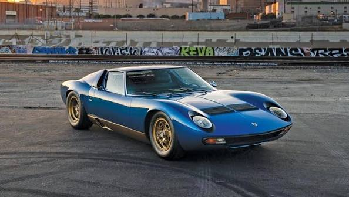

BMW
E46 M3 / M3 GTR
A geração E46 do M3 é considerada o equilíbrio perfeito da linhagem desportiva da BMW devido ao brilhante motor atmosférico de 6 cilindros em linha. Contudo, para competir nos campeonatos americanos da American Le Mans Series, a BMW desenvolveu a versão ultra-exclusiva GTR com um motor V8 feito do zero nas pistas, imortalizando este modelo agressivo com aberturas no capot como o maior símbolo nos videojogos de corridas citadinas.
Especificações Técnicas:
• Motor: 4.0L P60B40 V8 (Versão GTR de estrada)
• Potência: 380 cv
• Peso: 1350 kg
• Relação Potência/Peso: 0.28 cv/kg (3.55 kg/cv)
• Velocidade Máxima: 295 km/h
• 0-100 km/h: 4.7 segundos

BMW
E92 M3
A geração E92 quebrou uma tradição de longa data na BMW ao tornar-se na única linhagem do desportivo M3 a vir equipada de fábrica com um motor V8 atmosférico derivado diretamente da tecnologia aplicada na Fórmula 1 pela marca. Capaz de gritar até às 8400 RPM, este cupê combinava uma elegância sóbria com o comportamento dinâmico agressivo clássico que caracteriza a divisão desportiva M.
Especificações Técnicas:
• Motor: 4.0L S65 V8 Atmosférico
• Potência: 420 cv
• Peso: 1580 kg
• Relação Potência/Peso: 0.26 cv/kg (3.76 kg/cv)
• Velocidade Máxima: 250 km/h (limitada) / 290 km/h livre
• 0-100 km/h: 4.8 segundos

Bugatti
Type 57
Desenhado pelo talentoso Jean Bugatti, o Type 57 (particularmente na versão SC Atlantic) é reverenciado como uma das maiores e mais valiosas obras de arte sobre rodas da era pré-guerra francesa. Caracterizava-se pelas suas deslumbrantes linhas fluidas com uma costura rebitada dorsal marcante na carroçaria, aliando um requinte estético inigualável a uma velocidade impressionante para o seu tempo.
Especificações Técnicas:
• Motor: 3.3L de 8 cilindros em linha com compressor volumétrico (SC)
• Potência: 200 cv
• Peso: Aprox. 950 kg
• Relação Potência/Peso: 0.21 cv/kg (4.75 kg/cv)
• Velocidade Máxima: 200 km/h
• 0-100 km/h: Aprox. 10 segundos

Ferrari
288 GTO
A Ferrari 288 GTO foi concebida originalmente com o propósito absoluto de obter a homologação de corrida para o temível e livre Grupo B de circuitos da FIA. No entanto, o campeonato foi cancelado antes do carro chegar a competir, transformando esta obra-prima armada com um motor V8 biturbo montado longitudinalmente na fundação genética direta da linhagem moderna de hipercarros da marca de Maranello.
Especificações Técnicas:
• Motor: 2.9L Tipo F114B Bi-Turbo V8
• Potência: 400 cv
• Peso: 1160 kg
• Relação Potência/Peso: 0.34 cv/kg (2.90 kg/cv)
• Velocidade Máxima: 305 km/h
• 0-100 km/h: 4.9 segundos

Ferrari
F40
O Ferrari F40 foi o derradeiro e icónico supercarro aprovado pessoalmente pelo lendário fundador Enzo Ferrari para celebrar os 40 anos da empresa. Construído com materiais inovadores como Kevlar e fibra de carbono crua visível sob a pintura finíssima, o F40 abdicou de qualquer luxo ou assistência, apresentando-se como um verdadeiro monstro de corrida purista e analógico feito para as ruas.
Especificações Técnicas:
• Motor: 2.9L Bi-Turbo V8
• Potência: 478 cv
• Peso: 1100 kg
• Relação Potência/Peso: 0.43 cv/kg (2.30 kg/cv)
• Velocidade Máxima: 324 km/h
• 0-100 km/h: 4.1 segundos

Ford (Europa)
Capri V6
O Ford Capri foi carinhosamente apelidado no mercado automotivo como "O Mustang Europeu". Lançado com o intuito de replicar o sucesso americano do modelo compacto acessível mas com dimensões e mecânicas mais ajustadas às estradas sinuosas do velho continente, o Capri combinava linhas elegantes de estilo fastback desportivo com a sonoridade carismática do seu motor V6.
Especificações Técnicas:
• Motor: 3.0L Essex V6 (Geração MK1/MK2)
• Potência: 140 cv
• Peso: 1080 kg
• Relação Potência/Peso: 0.13 cv/kg (7.71 kg/cv)
• Velocidade Máxima: 198 km/h
• 0-100 km/h: 8.7 segundos

Ford (Europa)
Escort RS Cosworth
O Ford Escort RS Cosworth nasceu puramente para servir de base à homologação da marca no Campeonato Mundial de Ralis (WRC). Engenheiros da Cosworth desenvolveram uma mecânica fenomenal baseada num motor turbo de grande diâmetro acoplado a uma tração integral agressiva. O seu elemento visual mais impactante e inconfundível é a gigantesca asa traseira biplana estilo "cauda de baleia".
Especificações Técnicas:
• Motor: 2.0L Cosworth YBT Turbo de 4 cilindros
• Potência: 227 cv
• Peso: 1275 kg
• Relação Potência/Peso: 0.17 cv/kg (5.61 kg/cv)
• Velocidade Máxima: 240 km/h
• 0-100 km/h: 5.7 segundos

Ford (Europa)
Focus RS500
Lançado como uma edição estritamente limitada a apenas 500 unidades para celebrar o final de ciclo da espetacular segunda geração do Focus RS, o RS500 tornou-se lendário pelo seu aspeto hiper-agressivo com pintura em preto baço texturado de fábrica. Ele esticou os limites dinâmicos da tração dianteira ao enviar toda a força brutal do carismático motor de 5 cilindros para as rodas dianteiras com o inovador sistema de suspensão RevoKnuckle.
Especificações Técnicas:
• Motor: 2.5L Turbo de 5 cilindros em linha
• Potência: 350 cv
• Peso: 1468 kg
• Relação Potência/Peso: 0.23 cv/kg (4.19 kg/cv)
• Velocidade Máxima: 265 km/h
• 0-100 km/h: 5.6 segundos

Ford (Europa)
Racing Puma
O Ford Racing Puma foi uma edição especial ultra-exclusiva produzida no Reino Unido em parceria com a Tickford. Partindo de um pequeno cupê citadino, os engenheiros alargaram de forma marcante as vias e painéis de carroçaria em aço, adicionaram travões de competição Alcon e afinaram a suspensão de forma cirúrgica, criando um dos chassis de tração dianteira de melhor comportamento dinâmico de todos os tempos.
Especificações Técnicas:
• Motor: 1.7L Zetec-R de 4 cilindros Atmosférico
• Potência: 155 cv
• Peso: 1174 kg
• Relação Potência/Peso: 0.13 cv/kg (7.57 kg/cv)
• Velocidade Máxima: 202 km/h
• 0-100 km/h: 7.9 segundos

Koenigsegg
One:1
O Koenigsegg One:1 inaugurou a designação histórica de "Megacarro" no panorama mundial. A sua denominação deve-se a um feito de engenharia considerado impossível durante anos: atingir uma relação peso-potência perfeita e absoluta de 1 cavalo de potência para cada 1 quilo de peso do veículo (1360 kg para 1360 cavalos), gerando uma performance balística gerida por aerodinâmica ativa extrema.
Especificações Técnicas:
• Motor: 5.0L Bi-Turbo V8 Flexfuel
• Potência: 1360 cv (1 Megawatt)
• Peso: 1360 kg
• Relação Potência/Peso: 1.00 cv/kg (1.00 kg/cv)
• Velocidade Máxima: 440 km/h
• 0-100 km/h: 2.8 segundos

Lamborghini
Miura
O Lamborghini Miura é universalmente aclamado pelos entusiastas como o modelo que definiu de forma definitiva o conceito moderno de "Supercarro". Lançado em 1966 com linhas esculturais intemporais desenhadas por Marcello Gandini da casa Bertone, quebrou todas as regras de design da época ao posicionar o seu glorioso motor V12 de forma transversal central-traseira logo atrás dos bancos dos ocupantes.
Especificações Técnicas:
• Motor: 3.9L Lamborghini V12 Atmosférico (P400S)
• Potência: 370 cv
• Peso: 1245 kg
• Relação Potência/Peso: 0.29 cv/kg (3.36 kg/cv)
• Velocidade Máxima: 288 km/h
• 0-100 km/h: 5.5 segundos

Lamborghini
Murciélago LP670-4 SV
O Murciélago SuperVeloce (SV) representa o fecho monumental de uma era épica na Lamborghini: a última versão radical a utilizar o clássico bloco de motor V12 analógico concebido originalmente por Bizzarrini nos anos 60. Com um pacote aerodinâmico fixo imponente em fibra de carbono, redução substancial de peso e tração integral agressiva, é um dos monstros mais puros e ruidosos da marca de Sant'Agata.
Especificações Técnicas:
• Motor: 6.5L V12 Atmosférico
• Potência: 670 cv
• Peso: 1565 kg
• Relação Potência/Peso: 0.42 cv/kg (2.33 kg/cv)
• Velocidade Máxima: 342 km/h
• 0-100 km/h: 3.2 segundos

Lotus
Elise
O Lotus Elise materializou de forma exemplar o mantra imortal do fundador Colin Chapman: "Simplifica, depois adiciona leveza". Lançado em meados dos anos 90, o Elise utilizou uma revolucionária estrutura de chassis em alumínio extrudido colado. Ao abdicar de motores gigantescos ou pesadas assistências, ofereceu uma experiência mecânica de condução visceral e ágil focada inteiramente na pureza de reações dinâmicas.
Especificações Técnicas:
• Motor: 1.8L Rover K-Series de 4 cilindros (S1)
• Potência: 120 cv
• Peso: 725 kg
• Relação Potência/Peso: 0.16 cv/kg (6.04 kg/cv)
• Velocidade Máxima: 202 km/h
• 0-100 km/h: 5.9 segundos

McLaren
F1
Concebido pelo genial engenheiro Gordon Murray sem qualquer tipo de restrição financeira ou de compromisso técnico, o McLaren F1 é considerado a maior obra-prima automóvel de todos os tempos. Destacou-se pela sua inovadora cabine com três lugares e posição central de condução, um motor V12 desenvolvido pela BMW e um cofre de motor revestido a ouro para isolamento térmico, mantendo-se ainda hoje como o carro atmosférico mais rápido do mundo.
Especificações Técnicas:
• Motor: 6.1L BMW S70/2 V12 Atmosférico
• Potência: 627 cv
• Peso: 1138 kg
• Relação Potência/Peso: 0.55 cv/kg (1.81 kg/cv)
• Velocidade Máxima: 386.4 km/h
• 0-100 km/h: 3.2 segundos

Porsche
Carrera GT
O Carrera GT nasceu a partir das cinzas de um projeto secreto de motor V10 que a Porsche tinha desenvolvido originalmente para as pistas de Fórmula 1 e Le Mans. Lançado em 2003 com uma exigente caixa manual de velocidades e embraiagem cerâmica complexa, este hipercarro analógico ganhou reputação mística devido ao som ensurdecedor do seu motor e comportamento dinâmico que exige respeito absoluto.
Especificações Técnicas:
• Motor: 5.7L V10 Atmosférico
• Potência: 612 cv
• Peso: 1380 kg
• Relação Potência/Peso: 0.44 cv/kg (2.25 kg/cv)
• Velocidade Máxima: 334 km/h
• 0-100 km/h: 3.9 segundos

Porsche
GT2 RS (992)
A designação GT2 RS representa o pico absoluto e implacável de performance em pista na Porsche. Projetado com base no icónico design do 911 mas despido de tração integral em prol de uma leve e cirúrgica tração traseira armada com turbos gigantescos e aerodinâmica ativa derivada das pistas alemãs, este monstro moderno de Estugarda foi concebido com a missão explícita de esmagar recordes de voltas nos circuitos mais exigentes do planeta.
Especificações Técnicas:
• Motor: 3.8L Bi-Turbo Boxer de 6 cilindros
• Potência: 700 cv
• Peso: 1470 kg
• Relação Potência/Peso: 0.47 cv/kg (2.10 kg/cv)
• Velocidade Máxima: 340 km/h
• 0-100 km/h: 2.8 segundos